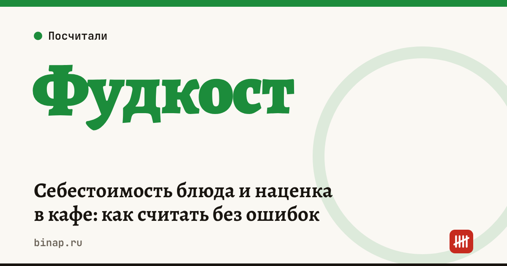

Себестоимость блюда и наценка в кафе: как считать без ошибок

Себестоимость блюда — это стоимость продуктов на одну порцию по техкарте с учётом потерь при обработке. От неё считают фудкост, наценку и маржу — три разных показателя, которые часто путают. Ошибка в любом из них ведёт к цене, которая не покрывает расходы кафе.
Коротко
- Себестоимость порции = сумма (вес ингредиента брутто × закупочная цена за кг) по техкарте.
- Вес брутто учитывает потери при очистке и обработке: на тарелку попадает меньше, чем куплено.
- Фудкост = себестоимость ÷ цена в меню × 100%.
- Наценка считается от себестоимости, маржа — от цены. При одной и той же цене это разные числа.
- Техкарты пересчитывают при каждом заметном изменении закупочных цен.
Сроки, изменения и разборы для ИП и самозанятых — каждое утро в Telegram и MAX. Подпишитесь, чтобы не пропустить.
Как посчитать себестоимость
Пример (расчёт редакции, цены условные): салат с курицей, выход 250 г.
| Ингредиент | Брутто, г | Цена за кг | Стоимость |
|---|---|---|---|
| Куриное филе | 120 | 450 ₽ | 54 ₽ |
| Листья салата | 60 | 600 ₽ | 36 ₽ |
| Томаты черри | 50 | 500 ₽ | 25 ₽ |
| Сыр | 30 | 900 ₽ | 27 ₽ |
| Соус и специи | — | — | 15 ₽ |
| Себестоимость порции | 157 ₽ |
Фудкост, наценка и маржа
Цена в меню — 490 ₽.
| Показатель | Формула | Значение |
|---|---|---|
| Фудкост | 157 ÷ 490 × 100% | 32% |
| Наценка | (490 − 157) ÷ 157 × 100% | 212% |
| Маржа | (490 − 157) ÷ 490 × 100% | 68% |
| Маржинальный доход с порции | 490 − 157 | 333 ₽ |
Наценка 212% и маржа 68% описывают одну и ту же цену — просто от разной базы. Из маржинального дохода кафе покрывает аренду, зарплату, коммуналку и получает прибыль.
Как выставить цену
Цена = себестоимость ÷ целевой фудкост. При целевом фудкосте 30%: 157 ÷ 0,30 ≈ 523 ₽. Целевой уровень каждое заведение выбирает само — по формату, аренде и зарплатам.
Посчитайте свои блюда в калькуляторе фудкоста и наценки: он учитывает потери и комиссию доставки.
Вести техкарты, остатки и себестоимость в одной системе: ссылка
Частые ошибки
- Нетто вместо брутто. Считают вес на тарелке, а не купленный — себестоимость занижена.
- Старые цены. Техкарту посчитали год назад, поставщик поднял цены — блюдо незаметно стало дешёвым.
- Нет списаний. Порча и ошибки кухни — тоже расход; заложите их процентом.
- Одна цена для зала и доставки. Комиссия агрегатора уменьшает маржинальный доход с порции.
Все шаги — в разделе «Кафе и общепиту». Какой налоговый режим выгоднее при большой доле продуктов в расходах — УСН 6% или 15%.
Частые вопросы
Какой фудкост считается нормальным? Универсальной цифры нет: она зависит от формата, аренды и зарплат. Сравнивайте свои блюда между собой и следите, чтобы фудкост не рос из-за закупочных цен.
Чем наценка отличается от маржи? Наценка — процент от себестоимости, маржа — процент от цены. Наценка 100% означает маржу 50%.
Как часто пересчитывать техкарты? При каждом заметном изменении цен поставщиков и хотя бы раз в квартал.